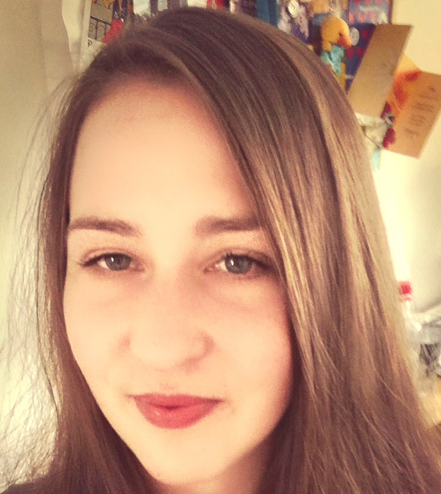

KRISTÝNA JEŘÁBKOVÁ
CURICULUM VITAE
WORK EXPERIENCE
- CCA Group a.s - TESTER
APR 2021 - PRESENT
- Testing sofwtare application
- Creating user documantion
- Test automation
- Korn Ferry - JUNIOR ANALYST
AUG 2019 - APR 2021
- Research, analyze and manipulate data and produce reports to provide understanding and insights of a project or sector team
- Tesco SW, SOFTWARE ANALYST JUNIOR
MAR 2019 - MAY 2019
- Processing software change / development requests from the client
- Creating analytical model using UML
EDUCATION
- MENDEL UNIVERSITY IN BRNO
2011 - 2017
- Economics, Ing., 2015- 2017
- International Studies, Bc., 2011-2015
- UNIVERSIDAD DE GRANADA, SPAIN
2012 - 2013